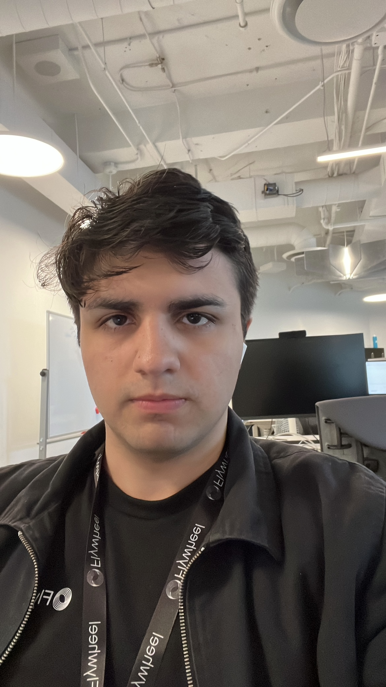

Introduction
During the Summer 2025 term, I completed a four-month co-op placement as a Software Developer at Flywheel. This report highlights my work, the goals I set for myself, key projects I contributed to, and the personal and professional growth I experienced. My hope is that this website provides insight into my development as a developer and a team member during my time at Flywheel.
About Flywheel
Flywheel is a global leader in digital commerce, helping top brands grow their online business with powerful software and expert services. Headquartered in Baltimore, with offices around the world, they work with thousands of clients, especially in the consumer goods space to make e-commerce smarter and more efficient. Flywheel offers solutions for everything from advertising and analytics to retail operations and creative content, all backed by a collaborative team and a focus on innovation. By combining advanced technology with deep industry expertise, Flywheel empowers brands to stay ahead in the fast-changing world of digital commerce.
My Experience
During the Summer 2025 term, I completed a four-month co-op placement as a Software Developer at Flywheel. This report highlights my work, the goals I set for myself, key projects I contributed to, and the personal and professional growth I experienced. My hope is that this website provides insight into my development as a developer and a team member during my time at Flywheel so far, as I continue my journey with the company.
During my co-op at Flywheel, my main responsibility was building new UI components and features using React and TypeScript, closely following specifications from the senior product manager. Early in the term, I developed a custom container component for the multiplatform-view (MPV) page, which gives users a unified experience for managing campaigns across different platforms and devices. This helped improve both navigation and accessibility for our clients.
I also worked on enhancing the save filter modal for the Budget Optimizer page. The Budget Optimizer at Flywheel is an AI-driven tool designed to help clients maximize their advertising spend by providing data-driven recommendations for budget allocation. By improving the save filter feature, I made it easier for users to personalize and manage their budgeting preferences, making the tool even more intuitive and valuable.
Additionally, I contributed to improving tooltip functionality, allowing users to access helpful information without cluttering the interface. Alongside building new features, I was responsible for fixing bugs and iterating on my work based on feedback from the team. I also had the chance to work with a senior developer to investigate a complex backend issue, which gave me valuable insight into full stack web development and helped me improve my problem-solving skills.
One of the more technically challenging projects involved updating the table formatting logic to support both standard title case and special terms that needed to remain in all caps. Solving this required a mix of creative problem-solving and attention to detail, as I needed to ensure consistency and clarity across the application. Later in the term, I led the integration of Zod for client-side validation, which improved the reliability and maintainability of our forms and modals.
Beyond technical tasks, I actively participated in daily standups, and sprint planning. These experiences helped me sharpen my communication skills and taught me how to effectively collaborate within an agile team environment. I learned how to present my work to both technical and non-technical audiences, and I became more proactive in seeking feedback and offering support to my teammates. My team members were always kind and willing to help whenever I had questions, which made it easy to learn and grow throughout the term. In addition to working with my immediate team, I also had the opportunity to meet and interact with people from other teams, which broadened my understanding of the company and gave me insight into different areas of the business.
Throughout my co-op, I also tackled various bug fixes and performance optimizations, such as improving filter validation logic in modals and streamlining component rendering for better responsiveness. These tasks, while sometimes less visible, were vital to the overall user experience and stability of the platform.
Working at Flywheel has been an invaluable opportunity to deepen my frontend web development skills and gain firsthand experience in building scalable, user-centric applications. The technical challenges I encountered pushed me to find innovative solutions, and the collaborative culture helped me grow as both a developer and a team member. I look forward to applying these skills and lessons to future roles in software engineering.
Telman at the Flywheel Toronto office
Work Term Goals
Learning Goal #1: I want to improve my ability to communicate complex technical ideas clearly and effectively to both technical and
non-technical audiences, adapting my communication style based on the context and audience.
Throughout my co-op, I focused on improving my integrative communication skills in various settings. In a meeting with 50 people, I demoed some of
the initial tickets I worked on. The presentation went well, I showed my code and explained my thought process. I received constructive feedback from
my teammates, who congratulated me on my first demo and encouraged me to keep presenting. At daily standups, I initially had some trouble clearly
delivering my thoughts, but as time went on, my confidence and explanation skills improved. I also became more comfortable reaching out to teammates
for help, which strengthened my collaborative skills. Overall, these experiences helped me become a more confident and effective communicator in technical
environments.
Learning Goal #2: I want to enhance my creative thinking skills by designing and implementing innovative features or improvements in the
projects I contribute to, particularly in areas like user experience, optimization, or automation.
During my co-op, I made it a point to think creatively when working on new features and improvements. One project involved designing a UI container
with a button and a link to help users navigate more easily. After team feedback, I revised the design to better fit their needs, and the final version
received positive feedback. For the tooltip feature, I suggested changes that made it more user-friendly, and my idea ended up being used in production.
I also solved a tricky issue where table text needed to be mostly title case, except for specific terms in all caps, and I found a way to handle both.
Overall, I'm proud of the creative solutions I brought to the team and how they made a difference in our final product.
Learning Goal #3: I aim to strengthen my problem-solving skills by effectively analyzing technical challenges and implementing efficient, scalable
solutions within full-stack development projects.
During my summer co-op, I focused on tackling non-trivial technical challenges and finding efficient solutions. For example, I improved data formatting
logic for tables, resulting in a clearer interface. Another challenge was formatting table labels so that most words appeared in title case while certain
terms stayed in all caps. I implemented a custom function to handle this, based on best practices I researched. For my last ticket, I addressed a tricky
filter name validation issue in a modal by introducing Zod for declarative validation and refactoring save logic. These experiences boosted my confidence
and independence as a problem solver, and I now feel more capable of breaking down complex problems and solving them step by step.
Learning Goal #4: I aim to improve my personal organization and time management skills to consistently meet deadlines, balance multiple tasks, and
contribute reliably to team goals in a fast-paced development environment.
During my co-op, I prioritized improving my organization and time management so I could meet deadlines and support my team. I completed tickets on time,
even when juggling multiple responsibilities. For example, I shipped a new container feature and tooltip in React ahead of a bug bash, which contributed
to a smoother workflow. When things got busy, I learned to start tickets earlier and switch tasks if I got stuck. I also became better at estimating how
long tasks would take and breaking down tickets into manageable pieces. Moving forward, I plan to keep refining my time management by setting clearer goals
for each sprint and prioritizing tasks more strategically.
Learning Goal #5: I want to develop my ability to work effectively as part of a software engineering team by contributing consistently, communicating
openly, and supporting team goals and collaboration.
Throughout my co-op, I prioritized being an effective team member by contributing consistently and communicating openly. I received positive feedback
from my teammates and manager for my collaboration and willingness to ask for help when needed. I also supported others when they had questions or
challenges, and I worked closely with a teammate to develop a new saving filter feature using React. These experiences helped me grow as a collaborator
and reinforced the importance of teamwork. Looking ahead, I aim to further enhance my teamwork skills by seeking out opportunities to pair program,
participate in team discussions, and support others whenever possible.
Conclusions
As my Summer 2025 Software Engineering Co-op at Flywheel draws to a close, I'm proud of how much I've grown as both a frontend web developer and a team member. When I started, I had some foundation in software engineering, but working in a real-world environment helped me level up my skills, especially in frontend web development with modern tools and frameworks. I had the chance to design and implement user-friendly Ul features, solve tricky technical problems, and learn how to deliver solutions efficiently as part of a fast-paced team. Beyond coding, I became a more effective communicator and collaborator, learning how to explain technical ideas to different audiences and support my teammates. This experience has not only improved my technical abilities, but also reinforced the importance of adaptability and continuous learning. I'm excited to take these lessons and new skills into future projects and the next steps of my career.
Acknowledgments
I would like to thank everyone on the Insights team for their support, encouragement, and willingness to help whenever I needed it. I'm grateful to my manager, Navneet Singh, for trusting me with meaningful projects and supporting my growth as a frontend web developer. I also appreciate my co-op supervisor, Jacob Wadsworth, who provided valuable guidance throughout the term, and my technical buddy, Andrei Markov, who was always there to answer my questions and help me work through technical challenges. I'm thankful for the collaborative and welcoming environment at Flywheel, which made this a truly rewarding experience.
Telman at the wonderland with teammates